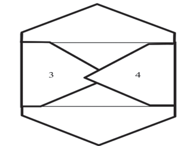
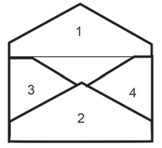
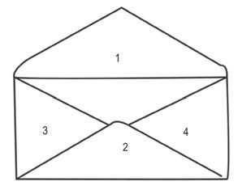

15. Kunja upande namba 2 kwa ndani. Ukunje hadi ulale juu ya namba 3 na namba 4 kama unavyoonekana kwenye Kielelezo namba 6;

16. Paka gundi katika sehemu zote za pande namba 2, 3 na 4 zitakazounganishwa. Baada ya hapo ziunganishe na gandamiza kama zinavyoonekana kwenye Kielelezo namba 7;

17. Paka gundi itumikayo katika bahasha kwenye sehemu ya ndani ya mfuniko wa bahasha;